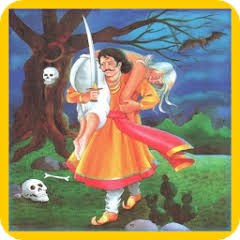

24.કોનું પુણ્ય વધારે ? |
રાત્રિના અંધારામાં અને ગાઢ જંગલમાં થોડો સમય ભટક્યા પછી રાજા વિક્રમાદિત્યએ ફરીથી બેતાલ પર કબજો કર્યો. દર વખતની જેમ બેતાલે વાર્તા કહેવાનું અને પ્રશ્નો પૂછવાનું ચાલુ રાખ્યું. બેતાલે વાર્તા કહેવાનું શરૂ કર્યું….
|  |
એક સમયે મિથલાવતી નામનું એક શહેર હતું. ગુણાધિપ નામનો રાજા ત્યાં રાજ કરતો હતો. રાજાને મળવા રોજ દૂર દૂરથી લોકો આવતા. એકવાર કોઈ રાજ્યમાંથી એક યુવક તેમને મળવા અને તેમની સેવા કરવા આવ્યો. યુવકે રાજાને મળવાનો ઘણો પ્રયત્ન કર્યો, પણ તે તેને મળી શક્યો નહીં. યુવક તેની સાથે જે પણ સામાન લાવ્યો હતો તે પણ ગયો હતો.
એક સમયે રાજા શિકાર માટે જંગલમાં ગયા હતા. યુવક પણ તેમની પાછળ આવે છે. જંગલ એટલું ગાઢ હતું કે રાજાના સેવકો તેનાથી અલગ થઈ ગયા. માત્ર રાજા અને યુવાનો જ સાથે રહે છે. જ્યારે રાજા જંગલ તરફ જવા લાગે છે, ત્યારે યુવક તેને રોકે છે. રાજા તેની તરફ જુએ છે અને કહે છે, "તમે આટલા નબળા કેમ દેખો છો?" યુવકે જવાબ આપ્યો, “રાજા, આ મારી કર્મની ભૂલ છે. હું એવા ઘણા રાજાઓ સાથે રહ્યો છું જેઓ હજારો લોકોને ભોજન કરાવે છે, પરંતુ તેમની નજર મારા પર ક્યારેય પડી નથી.”
|
|
પોતાની વાત ચાલુ રાખતા યુવક કહે છે, “રાજા, છ વસ્તુઓ વ્યક્તિને નબળી બનાવે છે - ખોટી વ્યક્તિને પ્રેમ કરવો, કારણ વગર હસવું, સ્ત્રી સાથે દલીલ કરવી, ખરાબ માસ્ટર માટે કામ કરવું, ગધેડા પર સવારી કરવી અને સંસ્કૃત વગરની ભાષા. આ સિવાય સર્જક વ્યક્તિના જન્મની સાથે જ તેના ભાગ્યમાં પાંચ વસ્તુઓ લખે છે - ઉંમર, કર્મ, સંપત્તિ, જ્ઞાન અને કીર્તિ. જ્યાં સુધી વ્યક્તિ સત્કર્મ કરે છે ત્યાં સુધી તેની પાસે ઘણા દાસ છે. જ્યારે સદ્ગુણ ઘટે છે ત્યારે ભાઈ તેના ભાઈનો દુશ્મન બની જાય છે, પણ હે રાજા, કોઈ દિવસ કોઈને પોતાના ગુરુની સેવા કરવાનું ફળ મળે છે."
યુવકના આ શબ્દોની રાજા પર ઘણી અસર થઈ. થોડા સમય પછી બંને શહેરમાં પાછા ફર્યા. રાજા એ યુવાનને નોકરીએ રાખે છે.
થોડા દિવસો પછી યુવક કોઈ કામ માટે બહાર જાય છે. તેને રસ્તામાં એક મંદિર દેખાય છે. તે અંદર જાય છે અને ત્યાં સ્થાપિત દેવીની પૂજા કરે છે. પછી તે બહાર આવે છે અને ત્યાં એક સુંદર સ્ત્રીને જુએ છે. યુવક પેલી સ્ત્રી પર મોહિત થઈ જાય છે. સ્ત્રી યુવકને કહે છે, "પહેલા તું આ તળાવના પાણીથી સ્નાન કર, પછી તું જે કહે તે હું કરીશ."

|
મહિલાની વાત સાંભળીને યુવક તળાવમાં ડૂબકી મારે છે. ડૂબકી મારતા જ તે પોતાના શહેરમાં પહોંચી જાય છે. પછી તે રાજાને મળે છે અને તેને આખી વાત કહે છે. યુવાનની વાત સાંભળીને રાજા કહે છે, "મને પણ ત્યાં લઈ જાવ, મારે પણ આ ચમત્કાર જોવો છે."
પછી બંને ઘોડા પર બેસીને મંદિર તરફ પ્રયાણ કરે છે. મંદિરમાં પહોંચ્યા પછી, તેણે દર્શન કર્યા અને જ્યારે તે બહાર આવે છે, ત્યારે તેને ત્યાં એક સ્ત્રી મળે છે, જે રાજા પર મોહિત થઈ જાય છે. સ્ત્રીએ રાજાને કહ્યું, "તમે જે કહેશો તે હું કરીશ."
આ સાંભળીને રાજા કહે છે, "તમે આ નોકર સાથે લગ્ન કરો." રાજાની વાત સાંભળીને સ્ત્રી કહે છે, "હું તમને પસંદ કરું છું." પછી રાજાએ સ્ત્રીને કહ્યું, “ભદ્ર માણસ જે કંઈ કહે, તે રાખે છે. તેથી, તમારે તમારી વાત પાળવી જોઈએ.” પછી યુવતી અને યુવક લગ્ન કરે છે.
આ વાર્તા સંભળાવીને બેતાલ કહે છે, "હે રાજા, હવે મને કહો કે રાજા અને નોકરમાં કોનું કામ વધારે હતું." રાજા વિક્રમાદિત્યે કહ્યું, "સેવકનું કામ મહાન થઈ ગયું છે." બેતાલ પૂછે છે કે કેવી રીતે? રાજા વિક્રમાદિત્ય કહે છે, "સત્કાર્ય કરવું એ રાજાનું કર્તવ્ય છે, પ રંતુ જો કોઈ કર્તવ્ય ન હોય તેણે સારું કર્યું, તો તે યુવકનું કામ મહાન થઈ ગયું." રાજાનો જવાબ સાંભળીને સોપારી ફરીથી જંગલમાં એક ઝાડ પાસે જાય છે અને લટકી જાય છે.
વ્યક્તિએ તેના વચનથી ક્યારેય પાછું ન જવું જોઈએ. સાચા માણસની ઓળખ એ છે કે તે આપેલા વચનો કેવી રીતે પૂરા કરે છે. તે જોતો નથી કે તેણે પોતાનું વચન પૂરું કરવા માટે શું બલિદાન આપવું પડશે